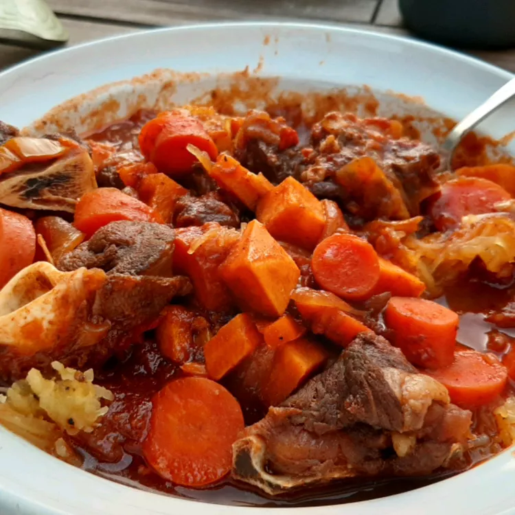

Goat Stew

How to make a Goat Stew
This goat stew is based on a Filipino dish called caldereta. It is usually served with rice. The serving size for this recipe is 2 to 4, depending on how much bone the meat has. Serve over rice. Masarap!
Ingredients
- 1 pound bone-in goat meat, cut into large chunks
- ¼ cup vinegar
- ¼ cup soy sauce
- 4 cloves garlic, crushed
- 1 tablespoon vegetable oil
- 1 onion, chopped
- 1 red bell pepper, cut into 1-inch squares
- 1 cup tomato sauce
- 2 cups beef stock
- 1 potato, peeled and cut into large chunks
- 2 carrots, peeled and cut into large chunks
- ½ cup green peas
- ½ teaspoon salt
- ¼ teaspoon pepper
- 1 pinch cayenne pepper
Steps
- Mix goat meat with vinegar, soy sauce, and garlic in a large bowl; cover and refrigerate for 1 to 8 hours. For the best flavor, marinate at least 6 hours. Remove meat from marinade and pat dry with paper towels; reserve marinade and garlic separately.
- Heat oil in a large pot over medium-high heat. Working in batches, cook goat meat in hot oil, stirring occasionally, until browned, 10 to 15 minutes. Transfer goat meat to a plate and set aside. Reserve drippings in the pot.
- Add onion, bell pepper, and reserved garlic to drippings. Cook and stir over medium heat until onion is translucent, about 5 minutes. Pour in tomato sauce; bring to a simmer. Cook until slightly thickened, about 5 minutes.
- Return goat meat to sauce. Pour in beef stock and reserved marinade; bring to a boil. Reduce heat to low, cover the pot, and simmer until meat is partially tender, 30 to 40 minutes.
- Stir in potato, carrots, and peas; season with salt, black pepper, and cayenne pepper. Simmer until goat meat is very tender and potato and carrots are cooked through, 20 to 30 more minutes. Adjust seasonings before serving.